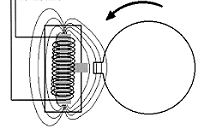
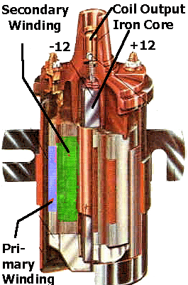
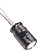
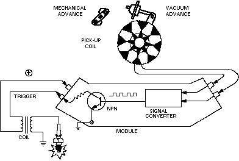
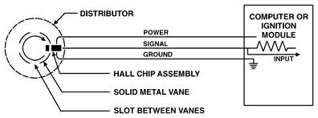
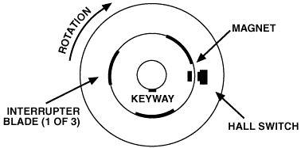
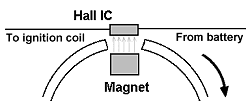
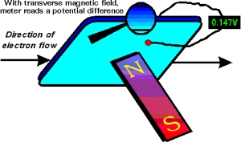
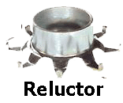
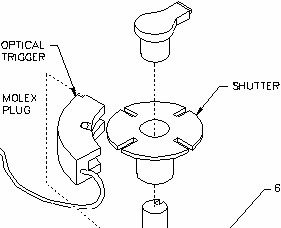

Review of basic ignition designs.
A chain or belt drives a distributor. Inside this distributor is a spring loaded contact switch ("POINTS") riding on a revolving cam. The points would open and close to fire a single coil which would produce the spark. Inside the distributor is also a "rotor" which rotates to determine which plug wire gets the spark. To advance the "TIMING" of the spark a mechanical arm would adjust the points position. As RPM increases spark starts to occur earlier. This is usually done by a centrifical weight or by using a vacuum diaphragm. The higher the RPM the higher engine vacuum would suck the diaphragm arm in advancing the points timing.
Ok, we all knew this already ... moving on.
Magnetism and Induced Current In the mid 1800's experts (including Michael Faraday ... today "micro Farads " measure capacitance) developed the concept that a current passing thru a coil wire creates a magnetic field. AND, more importantly, a magnet passing by a coil wire creates a voltage current. The amount of current depends on the magnetic size and speed (rate) the magnetic field passes (or changes) by the coil. The math equation for this is e=-df/dt. The change in magnetic field strength is dt and the time (rate of change) is dt. Technically, e is the "Induced EMF". But we talk of this as the current produced in the wire coil.
Automotive COIL (also called an "INDUCTOR") An iron core is wrapped with 2 long "coils" of wire. The "PRIMARY" winding on the outside and the longer "SECONDARY" winding on the inside. The wire length ratio is typically 100:1.
The coil is fed 12v to the primary winding. This in turn creates a large (enhanced by the iron rod) magnetic field which also surrounds the Secondary windings. The coil is now storing a large magnetic field (a Flux" field). When the +12v to the coil primary winding is turned off the magnetic ("flux") field inside the coil "collapses". This causes a "Back EMF" (Electro Motive Force) current in the primary wire of about 300-400volts. When the coil collapses this rapidly changing magnetic field is also transferred to the "Secondary" windings as current (remember ... a changing magnetic field passing by a coil!).
The Secondary winding is 100 times longer so produces a voltage about 100 times more than the Primary during collapse. Lets do the math. The Primary (sometimes called "Low Tension") wire is about 400v during the Back EMF spike. So the Secondary (sometimes called the "High Tension") wire is 100 x 300=30,000 volts. This high voltage is going somewhere, somehow to ground. The faster the power cutoff is, the faster the collapse, and the faster (more powerful) that spark is. So, when the points open (instantly cutting off power to the coil) 30,000 volts goes to ground via the spark plug.
Due to magnetic "flux" properties (research Teslar and the "left hand rule"if you want to know more) the inductor (COIL) encourages current flow towards the plug. But the collapsing magnetic field also produces the phenomenon discussed above called "Back EMF". This 300+ voltage spike can cause a mini-spark of it own across the points. To prevent this a CONDENSER is added.
CONDENSER The condenser is a large capacitor (only the automotive industry calls it a condenser?). It charges up to a smaller voltage. When the points open this small charge is dumped into the larger coil which slows its collapse. Remember, a coil output is strongest when the collapse is fast and sharp. The condenser slows this collapse just long enough for the points to get far enough apart so the coil back EMF output can't arc across that distance. Without a condenser the backflow arcing and heat would destroy the points (sometimes in a matter of seconds). However, the condenser can't be too big or the coil would collapse too slow and not produce any spark (especially at at higher RPM).
Coil output is a function of coil windings "turns ratio" and also voltage input. The more power you put in the more you get out, right? But, points are a mechanical switch limited by how much current you can pump through them without burning them up. Points are limited to about 250volts and 5 amps Coils can handle up to about 7 amps and transistor switches about 10-20 amps.
DWELL Conventional ignition is affected by "Dwell time" (or dwell angle). Dwell time refers to the time the points are closed thus recharging the coil. Dwell angle refers to the crankshaft angle of rotation made while the points are still closed. If dwell time (points closed) is too short the coil may not have enough time to recharge at high RPM. So large dwell is better right? But, if dwell is too large (points hardly open) then the points may not open at all (slop and wear) AND the points may not be open long enough for the coil to collapse (indirectly referred to as voltage "rise time"). The voltage rise time in conventional ignitions is about 80 microseconds, 125ish for TCI, and about 6microsec for modern CDI. Dwell limits the ability of points to deliver high power at high RPM. Race teams got around this by using dual point systems overlapping the dwell times to get what they needed.
- Problems with a conventional ignition system are:
- Points wear and erode timing accuracy
- Points limit power output to coil (limiting coil output)
- Point dwell limits high power, high RPM capabilities
- Mechanical Advance would wear and get sloppy

The first improvement of electronic ignition was to replace the points with a "solid state" semiconductor switch called a transistor. The advantage of a transistor is that it can conduct up to near 400-500 volts (more power than needed), is extremely accurate fast (in nanoseconds),and can last a long time in the heat / vibration of an engine. The trick of course if how to trigger the transistor switch. The common types of sensor systems that have evolved are: optical, magnetic, "Hall" effect, and (for trivia purposes only) "ECKO". In reverse order of today's usage:
"Hall Effect"
 This is the most widely used type of ignition sensor. The Hall effect (named after the American physicist Edwin Herbert Hall, 1855-1938) involves the generation of an "electric potential perpendicular to both an electric current flowing along a conducting material and an external magnetic field applied at right angles to the current upon application of the magnetic field". W-H-A-T ?!??. Practically speaking, a current is passed though a silican wafer. When a exposed to a magnetic field this disrupts the current flow and distributes more "potential" on one side of the wafer. This can be measured, conditioned, and amplified to trigger the ignition module. Hall Effect sensors are extremely accurate, they produce a "square" wave signal perfect for solid-state applications, and are very durable against heat / vibration. The rotor magnet does not need to be as strong (you may not feel its pull with a heavy screwdriver).
Most Hall effect rotors involve a stationary Hall Switch and stationary magnet. What rotates is an "Interrupter Blade". When the blade passes between the sensor and the magnet it blocks the magnetic pull on the Hall Switch. When a "shutter blade" is open, the magnetic field projects onto the Hall Sensor switching it on. Again, a Hall system needs to be powered, so you will typically see 3 wires to it.
Magnetic
 This is very popular and still used for many applications today because its a rugged durable design. In addition the sensor is not powered (like in Hall Effect) so it can be used in self powered magneto ignition applications. A coil sensor is used to detect the "flux" a magnet produces when it passes close by the sensor. This magnetic rotor is called a "Reluctor" (I betch ya didn't know that one). The problem with magnetic is that at higher RPM the sensor has trouble seeing "teeth" close together on the magnetic rotor. This is a bigger problem with many cylinder engines and/or high RPM applications. Also, you may remember magnets tend to loose their strength with vibration and heat. Also, reluctors are stronger magnets (you can definitely feel the pull if you get a screwdriver close) which tends to magnify things around it.
Optical An infrared sensor triggers when a rotor blade blocks the light path. Although accurate, the sensor is sensitive to dirt and dust. This is not used much but is very common in aftermarket ignition kits because its easy to adapt to almost any application.
ECKO "Eddy Current Killed Oscillator" systems were used by Lucas (yeah, the British "Dark Lord"). It involves a 2 coil sensor that has current flowing. The sensor detects the current disruption cause by a magnet passing by. It is similar to "Hall Effect" in that it is extremely accurate and durable. But for whatever reason is only used mainly in manufacturing automation applications.
Modern Electronic Ignition Modules For the most part, there are 2 types of ignition systems in use today (or variations of them): Induction ignition or CDI ("Capacitive Discharge Ignition"). Both systems use a sensor (discussed above) to trigger a transistor switch (which has replaced the points). CDI is more commonly used and you'll see why.
Induction Ignition: This is called an induction system because the coil is used as a power storage (an "inductor") device for the spark. Remember, the coil is powered up, stores near 30,000 volts, and unleashes it when the coil collapses (power supply cutoff). A feature of induction ignition is the slightly longer spark duration while the coil collapses. This is an advantage when starting and for igniting lean/high compression mixtures at high RPM. These type of systems require coils meant for "induction" ignitions (they have a higher resistance typically than CDI coils).
CDI: This type of ignition module is most widely used today. A CDI module has "capacitor" storage of its own and sends a short high voltage (about 250+ volts) pulse through the coil. The coil now acts more like a transformer (instead of a storage inductor) and multiplies this voltage even higher. Modern CDI coils step up the voltage about 100:1. So, a typical 250v CDI module output is stepped up to over 25,000v output from the coil. The CDI output voltage of course can be higher. So you'll see CDI systems claiming coil output capability over 40,000-60,000 volts!!? As you will see this is not exactly what happens at the plug but for math purposes it works out. The huge advantage of CDI is the higher coil output and "hotter" spark. The spark duration is much shorter (about 10-12 microseconds) and accurate. This is better at high RPM but can be a problem for both starting and/or lean mixture/high compression situations. CDI systems can and do use "low" resistance coils. AGAIN, the potential output of CDI coils can be over 40,000 volts. Lookout, 'cause this can be L_E_T_H_A_L!!
CDI TRIVIA Dwell is pretty much a meaningless term in CDI. The transistor switches are capable of nanosecond timing. And, the coil pulse "voltage rise time" to the plug is VERY fast at around 6 microseconds. So at high RPM the spark firing and duration time can be completely controlled to produce optimum coil voltages.
CDI was pioneered mainly by Bosch in Europe. Today we see a variety of names to include: Ford's TFI (Thick Film Integrated ?!?), GM's HEI (High Energy Ignition), DIS (Distributorless Ignition System), ECU (electronic control unit),
Ignition Considerations The common question is: how much power do you need in an ignition system? The more the better right? Well, not exactly. Lately it seems the talk is always centered around high voltage (50,000+) low resistance racing coils, aftermarket ignitions (MSD, Accel), etc... What is really important?
Coil aspects: "Rise time" refers to the time needed for the coil voltage to reach 90% of its peak. Fast rise times are desired as they help prevent and breakdown plug fouling (or "plug tracking"). Plug fouling occurs when the spark is dissipated and runs to "ground" across deposits on the plug's surface instead of across the plug gap. These deposits can be carbon buildup, corrosion, lead salts, water, etc. Rise times for ignition systems are typically 80-120 microseconds for induction systems and 6 microsec for CDI.
It takes about 12-14,000 volts to initiate the spark across the plug gap. After the initial arc the voltage required to sustain the arc is much less and drops off significantly. So while you may have a manufacturer claimed 60,000 volt racing coil you can't actually get that across the plug. Since the advantage of CDI is the higher coil output, how does that get used. Well, normally it doesn't. The extra power possible in the coil is "Reserve Voltage". As the plugs wear, fouling, plug wires and connections get worse then the required firing voltage may go up 1-5,000 volts. So the "hotter" CDI coil output can help overcome these obstacles and the ignition system will last longer. So, its not that its working better.... but rather lasting longer that makes a hot coil good. The ideal coil output needed for normal applications is about 30,000 volts.
High RPM / High Compression / Racing applications: Newer techniques are being used to increase spark output. Additionally, CDI typically has a very short spark duration near 10-12 microseconds. As discussed you can't push more than about 20,000 volt across the plug without other stange phenomenon happening. If you were to try you would see arcing down the side of the plug, across carbon buildups at the electrode end, out any weak points in the wire insulation, connections, etc... So how do you get a better spark? Newer ignitions (like MSD-5 for example) are outputting a finely controlled multiple spark pattern into the plug. Instead of one big spark a shower of short duration sparks are flooded across the combustion stroke. This makes for a much more efficient burn. Using this technique newer CDI can achieve longer spark duration times (near 250). This is particularly better for starting, lean mixtures (which are hard to ignite), and high compression situations.
Ignition Future New generation auto ignitions will be designed for more accuracy, better efficiency and reliability. This will include "crank angle" sensors to improve timing and fuel injection accuracy (example, mounting the Hall sensor and magnets on the flyheel). Newer coils will be wound around an "E" shaped pole (not "center wound"). They will look like a square module and not the round cyclinder you've seen all these years. You'll see separate coils mounted atop each spark plug. This improves spark power (no plug wires), accuracy, and most importantly reduces RFI (radio frequency interference) problems. Timing and spark duration times will be adjusted across the RPM range. It also eliminates the need for a distributor rotor altogether. Additionally, timing advance will be calculated for a variety of inputs including increasing RPM vs. decreasing RPM (braking or coasting), throttle position, etc.
This push towards a truly "no moving parts" ignition with reliability and amazing accuracy is the way of the future.
Making Yours a Better Ignition The bigger enemy against ignition is RFI and insulation leakage. Basically, you want the best insulated (thicker, 12mm?) and well made plug wires you can get. Upgrade your CDI module if you want to spend a little more for higher performance. Although a good coil is always a plus, we've discussed how meaningless those manufacturers high output claims can be in practicality. In short, spend your money on good plug wires, good plugs, and then an upgraded CDI module/coil combination.
Aftermarket CDI
Just throwing some names out here IN NO ORDER. Search on these to find more info on the web.
MSD Accell Intelligent Ign System (Iss) Lucas Rita Dynatek Boyer